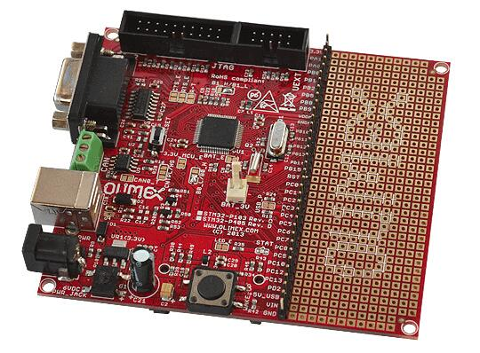

OLIMEX-STM32-P405
概述
OLIMEX-STM32-P405 开发板基于 STMicroelectronics STM32F405RG ARM Cortex-M4 CPU。
硬件
有关该开发板的信息，请访问 OLIMEX-STM32-P405 website 并参阅 OLIMEX-STM32-P405 user manual。ST STM32F405RG Datasheet 包含处理器的相关信息和数据手册。
支持的功能
olimex_stm32_p405 开发板支持下列硬件功能。
说明
The list of supported hardware features was not generated. Run a full documentation build for the required metadata to be available.
引脚映射

LED
USER_LED（红色）= PC12
PWR_LED（红色）= 电源
外部连接器
JTAG 调试
PIN # |
信号名称 |
Pin # |
信号名称 |
|---|---|---|---|
1 |
+3.3V |
11 |
|
2 |
+3.3V |
12 |
GND |
3 |
PB4 / TRST |
13 |
PB3 / TDO |
4 |
GND |
14 |
GND |
5 |
PA15 / TDI |
15 |
PB4 / TRST |
6 |
GND |
16 |
GND |
7 |
PA13 / TMS |
17 |
|
8 |
GND |
18 |
GND |
9 |
PA14 / TCK |
19 |
+5V_JTAG |
10 |
GND |
20 |
GND |
UEXT
PIN # |
信号名称 |
STM32F405 端口 |
|---|---|---|
1 |
+3.3V |
|
2 |
GND |
|
3 |
PA9/USART1_TX |
PA9 |
4 |
PA10/USART1_RX |
PA10 |
5 |
PB6/I2C1_SCL |
PB6 |
6 |
PB7/I2C1_SDA |
PB7 |
7 |
PA6/SPI1_MISO |
PA6 |
8 |
PA7/SPI1_MOSI |
PA7 |
9 |
PA5/SPI1_SCK |
PA5 |
10 |
PA4/SPI1_NSS |
PA4 |
GPIO 引脚排
Pin |
STM32F405 引脚功能 |
|---|---|
3V3 |
N/A |
PA1 |
PA1/USART2_RTS/ADC1/TIM2_CH2 |
PA8 |
PA8/USART1_CK/TIM1_CH1/MCO |
PB0 |
PB0/ADC8/TIM3_CH3/TIM1_CH2N |
PB1 |
PB1/ADC9/TIM3_CH4/TIM1_CH3N |
PB2 |
PB2/BOOT1 |
PB5 |
PB5/I2C1_SMBAI/TIM3_CH2/SPI1_MOSI |
PB8 |
PB8/TIM4_CH3/I2C1_SCL/CANRX |
PB9 |
PB9/TIM4_CH4/I2C1_SDA/CANTX |
VDDA |
N/A |
GNDA |
N/A |
PB10 |
PB10/I2C2_SCL/USART3_TX/TIM2_CH3 |
PB11 |
PB11/I2C2_SDA/USART3_RX/TIM2_CH4 |
PB12 |
PB12/SPI2_NSS/I2C2_SMBAL/USART3_CK/TIM1_BKIN |
PB13 |
PB13/SPI2_SCK/USART3_CTS/TIM1_CH1N |
PB14 |
PB14/SPI2_MISO/USART3_RTS/TIM1_CH2N |
PB15 |
PB15/SPI2_MOSI/TIM1_CH3N |
RST |
NRST |
PC0 |
PC0/ADC10 |
PC1 |
PC1/ADC11 |
PC2 |
PC2/ADC12 |
PC3 |
PC3/ADC13 |
PC4 |
PC4/ADC14 |
PC5 |
PC5/ADC15 |
PC6 |
PC6/TIM3_CH1 |
PC7 |
PC7/TIM3_CH2 |
PC8 |
PC8/TIM3_CH3 |
PC9 |
PC9/TIM3_CH4 |
PC10 |
PC10/USART3_TX |
PC12 |
PC12/USART3_CK |
PC13 |
PC13/ANTI_TAMP |
PD2 |
PD2/TIM3_ETR |
+5V_USB |
N/A |
VIN |
N/A |
GND |
N/A |
系统时钟
OLIMEX-STM32-P405 有两个外部振荡器。低速时钟频率为 32.768 kHz，主时钟频率为 8 MHz。处理器可以设置 HSE 驱动主时钟，主时钟最高可设为 168 MHz。
编程与调试
说明
The list of supported runners was not generated. Run a full documentation build for the required metadata to be available.
OLIMEX-STM32-P405 开发板没有内置调试工具接口，需要使用 ST 工具或外部 JTAG 探针。以下示例使用 ST-Link V2 USB 加密狗。
将应用程序烧录到 Olimex-STM32-P405
本教程使用示例应用程序 Hello World。
将 ST-Link USB 加密狗连接到主机和 OLIMEX-STM32-P405 开发板的 JTAG 端口。
现在构建并烧录应用程序。
# From the root of the zephyr repository
west build -b olimex_stm32_p405 samples/hello_world
west flash
运行串口主机程序以连接开发板：
$ minicom -D /dev/ttyACM0
复位开发板后，应显示以下信息：
***** BOOTING ZEPHYR OS v1.8.99 - BUILD: Aug 4 2017 14:54:40 *****
Hello World! arm
调试
可以按常规方式调试应用程序。以下以 Hello World 应用程序为例。
# From the root of the zephyr repository
west build -b olimex_stm32_p405 samples/hello_world
west debug